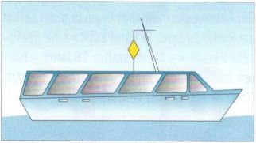

Правила судоходства по внутренним водным путям не различают прогулочные и коммерческие суда. В них используются только понятия «маломерные суда» и «суда».
► Маломерные суда — это лодки на вёслах, под парусом или мотором, амфибийные и воздушно‑подушечные суда, а также суда на подводных крыльях длиной менее 20 метров.
К ним не относятся буксиры, паромы или суда, допущенные к перевозке более 12 пассажиров, толкаемые баржи и плавучие сооружения.
Это определение очень важно, поскольку маломерные суда обязаны уступать дорогу всем судам.
Таким образом, моторная яхта длиной 19,80 м считается маломерным судном и должна уступать любой парусной яхте (менее 20 м) и любой гребной лодке. Моторная яхта длиной 20,10 м, напротив, считается судном, которому должны уступать все парусные и моторные лодки (менее 20 м) и гребные лодки. Правила получения удостоверений при этом остаются без изменений. Они применяются только к лодкам длиной менее 20 метров.

Жёлтый двойной конус, установленный на хорошо видимом месте, обозначает судно длиной менее 20 м, но допущенное к перевозке более 12 пассажиров, которому все «маломерные суда» должны уступать дорогу.